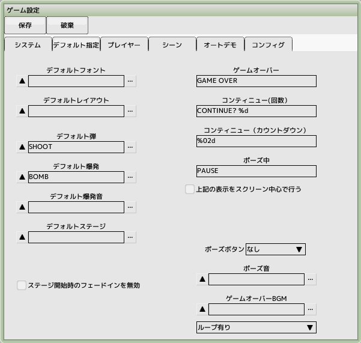

back to the original page
back to the original page
6. Creating enemy bullets
Keep the project file created in the previous tutorial open
Create a sprite for enemy bullets
Create a new sprite and name it 'SYSTEM'
Register img_system.bmp from the resource folder
This time we register the pattern number of only one enemy bullet (including the hit decision)
Later we will also add patterns such as items and guided missiles
Creating a character for enemy bullets
Create a new character and name it 'SHOOT'
Set the type of enemy bullets (normal) and parameters as shown in the figure to the right
Register a sprite (SYSTEM) and a script (new)
Creating a script for enemy bullets
Place the control group's passing panel in the task "0: Main" and set the time wait to complete the operation
Place the Annihilation Panel of Control Group after creating the gates to the tasks "9: Attack Hits" and "10: Defensive Hits"
It will disappear when an attack hits something or when you are hit by a bomb-like attack

Register as the default bullet
Save and close the sprites, characters and scripts you have created
Open the game settings and click on the Specify Defaults tab
Register the SHOOT you just created by clicking on the default bullets in it... of the default bullets in it ... and register the SHOOT that you just created
Let the enemy shoot the bullets
Open the script for the straight-line enemy 'ENEMY-A' that you created earlier
Leave a gap between the move panel and the pass-through panel (drag the pass-through panel down) as shown on the right
Place the shot panel of the attack group
Set the parameters as shown in the figure to the right
SHOOT the bullets, set the interval to 5, firing frequency to 2, and speed to 400
Perform a test run and make sure that bullets are fired at your plane from the enemy
At the moment it will not be destroyed if it hits its own plane
Back to top of page